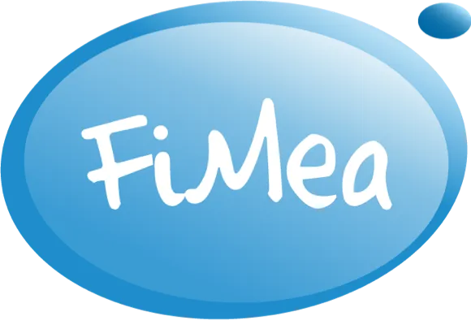
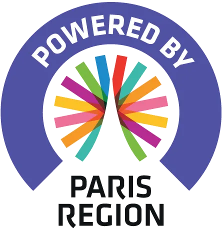
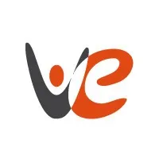

Notre entreprise
Qui sommes-nous ?
Airea est un bureau d’études indépendant spécialisé depuis 25 ans dans l’étude, la mesure et la modélisation de la qualité de l'air.
Qui sommes-nous ?
Airea est un bureau d’études indépendant spécialisé depuis 25 ans dans l’étude, la mesure et la modélisation de la qualité de l'air.
Notre équipe, composée d'ingénieurs maîtrisant les différents aspects techniques, normatifs et réglementaires, met en œuvre et développe des méthodes de mesures de la qualité de l'air intérieur et extérieur (polluants gazeux, particules, paramètres de confort, bactéries et moisissures...) adaptées à chaque problématique.
Disposant d'un réseau d'experts reconnus, Airea accompagne également les institutions publiques et privées, dans le cadre de la réalisation d’études et d'approches intégrées, de projets pilotes et de solutions innovantes. Notre bureau d'étude s'entoure de laboratoires d'analyses partenaires présentant les meilleures compétences selon les polluants mesurés.
Le développement de l’entreprise se poursuit actuellement dans les DOM-TOM et à l’international dans le domaine du conseil et de l’expertise, mais également par la mise en œuvre de campagnes de mesure locales : Nouvelle-Calédonie, Guyane, Martinique, Mali, Brésil, Maroc…

Nos principales valeurs
Technicité
Les études sont réalisées par des ingénieurs/docteurs qui maîtrisent le cadre réglementaire des différents domaines d’étude et les meilleures techniques métrologiques permettant de dimensionner et réaliser les mesures de qualité de l'air les plus pertinentes en fonction de la problématique.
Les mesures sont mises en œuvre sur la base d'un parc instrumental dédié, dont les instruments sont certifiés et répondent aux normes les plus exigeantes. Ils permettent une grande réactivité dans l'organisation des campagnes et un meilleur contrôle des prélèvements.
Indépendance
Airea réalise des diagnostics en toute indépendance et ne développe aucune activité d'installation ou maintenance de systèmes de ventilation, ni de commercialisation de systèmes d'épuration, produits dépolluants ou instruments de mesures (micro-capteurs...).
Suite à la réalisation d'une campagne de mesure de qualité de l'air, les échantillons prélevés sont confiés à des laboratoires d’analyse indépendants, partenaires de Airea depuis plus de 15 ans, accrédités COFRAC et/ou présentant les meilleures compétences dans le domaine étudié : odeurs, polluants chimiques, particulaires, microbiologiques.
Proximité
Airea dispose d'une équipe restreinte, adaptable et disponible lui permettant de construire une relation client personnalisée de qualité.
Chaque dossier est traité par un ou deux ingénieurs en fonction de l'ampleur de l'étude afin de garantir une relation de confiance tout au long du projet.
Les résultats sont interprétés par l’ingénieur référent qui a mis en œuvre les mesures sur le terrain, ce qui permet d'offrir à nos clients un interlocuteur privilégié maîtrisant l’ensemble du dossier.
Nos réseaux

Airea est membre de Fimea, Fédération Interprofessionnelle des Métiers de l’Environnement Atmosphérique, qui a pour principales missions de structurer l’industrie française de la qualité de l'air et de la développer en France et à l'international. Filière d'excellence, elle regroupe plus de 120 entreprises (TPE, PME, grand groupe) expertes dans les domaines de la qualité de l’air, aussi bien à l'intérieur des bâtiments que pour l’aménagement du territoire ou les environnements industriels.

Airea est membre du réseau Paris Region Business Club qui regroupe aujourd’hui près de 2 500 entreprises franciliennes soutenues par la Région Île-de-France. Les principaux objectifs du réseau sont de développer l’accompagnement, l’innovation et la coopération des entreprises franciliennes.

Airea est membre du réseau Vivre et Entreprendre, association créée en 2002 qui joue un rôle moteur dans le développement économique local et la dynamique de l’Est parisien. Elle rassemble et accompagne des entrepreneurs et chefs d’entreprise qui résident et/ou travaillent à Nogent-sur-Marne, Le Perreux-sur-Marne, Fontenay-sous-Bois et Villiers-sur-Marne.

Airea est membre du PEXE, l’association nationale des clusters, pôles de compétitivité et associations professionnelles des secteurs de l’environnement, de l’énergie et de l'économie circulaire. Avec plus de 40 réseaux et 6 000 entreprises, répartis sur tout le territoire, le PEXE est devenu le 1er acteur représentant les PME/ETI de la filière environnement et maîtrise de l’énergie, présent sur l’ensemble du territoire métropolitain et outre-mer.
Nos engagements RSE
Chez Airea, notre cœur de métier est déjà au service de la qualité de l'air et de la santé publique. Mais nous pensons que cet impact positif doit aller au-delà de nos projets : il doit aussi s’incarner dans nos pratiques quotidiennes, nos relations sociales et la manière dont nous partageons la valeur créée.
Les engagements d'Airea s’articulent ainsi autour de trois piliers :
🌱 Environnement
Réduire notre empreinte et promouvoir des mobilités durables
- Notre activité : chaque mission que nous menons contribue directement à diagnostiquer, mieux comprendre, et tenter de réduire ou éviter la pollution atmosphérique.
- Mobilité douce : siège implanté depuis 2017 au pôle multimodal de Val de Fontenay, facilement accessible en transports en commun. Depuis 2023, prise en charge à 100 % des abonnements de transport en commun pour nos collaborateurs.
- Zéro papier : depuis 2021, l’ensemble de nos process est dématérialisé.
- Investissement à impact : actionnaires de Team for the Planet depuis 2022, pour financer des innovations climatiques à grande échelle.
🤝 Social & Territoire
Soutenir l’inclusion, le sport et le collectif
- Ancrage local : mécénat auprès du club de judo Cercle Marc Lacay, pour encourager la pratique sportive et la transmission des valeurs des arts martiaux chez les jeunes.
- Insertion et cohésion professionnelle : recrutement de stagiaires et salariés issus de quartiers prioritaires, activités régulières de team-building pour renforcer la convivialité et l’esprit d’équipe.
- Réseaux locaux et nationaux : membre de Vivre & Entreprendre (dynamique économique locale) et du PEXE – le réseau national de la transition écologique.
⚖️ Gouvernance
Partager la valeur et encourager l’engagement
- Actionnariat salarié : une part du capital est détenu par les collaborateurs, gage d’un modèle d’entreprise partagé et collectif.
- Partage de la valeur : dispositifs de redistribution aux collaborateurs permettant d'associer chaque salarié aux performances de l’entreprise.
- Transparence et éthique : fonctionnement basé sur la confiance, l’écoute et la clarté dans les décisions.
💻 Souveraineté et impact environnemental du numérique
- Souveraineté numérique ciblée : déploiement d’infrastructures cloud et de solutions collaboratives hébergées en Europe (France, Suisse) pour le stockage des données internes sensibles (rapports clients) et les échanges opérationnels (visioconférence, chat), permettant une maîtrise des environnements critiques et des dépendances. Migration des outils de messagerie en cours.
- Conformité réglementaire : mes données hébergées dans ces environnements sont traitées sous juridiction européenne, en conformité avec le RGPD, sans transfert vers des clouds extra-européens.
- Performance environnementale des infrastructures : recours à des data centers à valorisation énergétique, dont la chaleur fatale est réinjectée dans des réseaux de chauffage urbain, contribuant à la réduction de l’empreinte carbone du numérique.
✨ Une démarche vivante
Notre démarche RSE n’est pas figée : elle évolue au fil du temps avec nos projets, nos équipes et notre territoire. Chaque nouvel engagement, qu'il soit modeste ou ambitieux, vient renforcer une conviction commune : si nous travaillons techniquement chaque jour à améliorer la qualité de l’air, nous devons aussi agir pour le bien de notre communauté et de nos salariés.